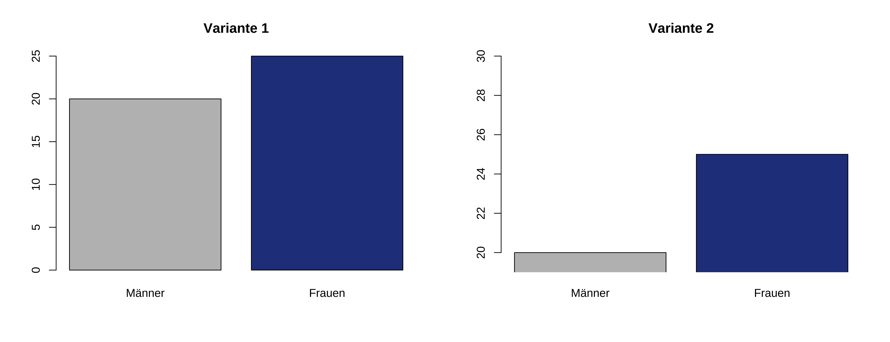
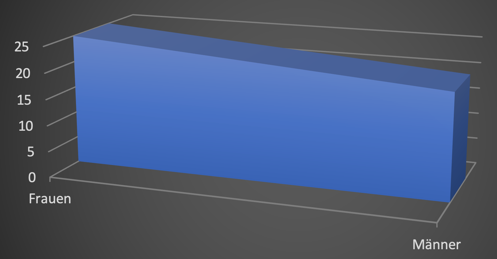

Datenvisualisierung
Einstieg
Die Visualisierung von Daten ist ein wichtiger erster Schritt in der Datenanalyse. Bei quantitativen Auswertungen kann die Visualisierung uns helfen, Muster in den Daten zu erkennen. Wir erinnern uns: Wenn wir wissenschaftliche Hypothesen formulieren, lassen diese sich in aller Regel in “Je-desto”- oder “Wenn-dann”-Sätze umformulieren. Und genau diese Je-desto- oder Wenn-dann-Beziehungen lassen sich durch die Visualisierung besonders gut erkennen. Zugleich kann eine schlechte Visualisierung aber auch in die Irre führen.
In diesem Beispiel etwa sehen wir die Resultate einer (fiktiven) Erhebung, bei der auf Unterschiede zwischen Männern und Frauen getestet wurde. Sicherlich fällt Ihnen auf, dass der Unterschied in der rechten Grafik weitaus größer erscheint als in der linken – obwohl die gleichen Daten dargestellt werden. Das liegt daran, dass rechts die y-Achse, also die vertikale Achse, beschnitten ist. Dadurch wirkt der Unterschied größer als er eigentlich ist.
Die folgenden Prinzipien (orientiert am Standardwerk “The visual display of quantitative information” von Edward Tufte) können uns als Best-Practice-Orientierungshilfe dienen:
- Die Daten zeigen
- Verzerrung der Daten vermeiden
- Weniger ist mehr: “Overplotting” vermeiden
- Aussagekräftige Beschriftungen verwenden
Das zweite Prinzip ist quasi die Kehrseite des ersten: Es geht darum, dass die Verteilung der Datenpunkte klar und deutlich dargestellt werden soll – die Visualisierung soll die Daten erkennbar machen und nicht etwa, wie im obigen Beispiel mit der abgeschnittenen y-Achse, verzerren.
Zum dritten Prinzip: Bei der Visualisierung von Daten empfiehlt es sich, die sogenannte ink-to-data ratio möglichst klein zu halten. Mit anderen Worten: Die Daten sollten unter Beachtung der ersten beiden Prinzipien möglichst schnörkellos dargestellt werden. Hier noch einmal die Daten von oben in einer anderen Visualisierung:
Das Verhältnis zwischen “Tinte” (bzw. Druckerschwärze oder farbigen Pixeln) zu Daten ist hier offensichtlich suboptimal. Über den dunklen Hintergrund kann man streiten – wenn man z.B. für Präsentationsfolien ein dunkles Design benutzt, kann sich das gut einfügen. (Allerdings kann das die Barrierefreiheit der Präsentation beeinträchtigen; zu barrierefreien Präsentationen gibt es z.B. hier mehr oder in diesem Video von Alexander Lasch.) Die dreidimensionale Darstellung hat jedoch keinen Mehrwert. Im Gegenteil – durch die dreidimensionale Darstellung lässt sich zumindest der zweite der beiden Werte nicht mehr so einfach identifizieren: Dass der Wert für die Frauen-Gruppe 25 beträgt, ist durch die Gitternetzlinien noch gut erkennbar; der Wert für die Männer – 20 – lässt sich aus dieser Grafik aber nicht ohne weiteres ablesen.
Die Grafik verstößt zudem gegen das vierte Prinzip: Es gibt keine aussagekräftigen Beschriftungen, sodass wir nicht erkennen können, was hier eigentlich dargestellt wird. Selbst wenn das aus dem Begleittext hervorgeht, ist es dennoch gute Praxis, aussagekräftige Achsenbeschriftungen zu verwenden, damit die Grafik quasi für sich selbst stehen kann.
Unser abschreckendes Beispiel ist aber noch in mindestens einer weiteren Hinsicht irreführend. Können Sie das Problem erkennen? Überlegen Sie kurz, bevor Sie die Antwort aufklappen.
Auch wenn wir keine genaueren Informationen darüber haben, um welche Daten es hier geht, ist doch relativ deutlich, dass die Variable “Geschlecht” hier kategorial operationalisiert wurde, d.h. “Männer” und “Frauen” bilden hier zwei klar voneinander getrennte Gruppen. Das dürfte in den allermeisten Fälle auch die sinnvollste Variante der Operationalisierung sein, auch wenn man inzwischen weiß, dass biologisches und insbesondere soziales Geschlecht keineswegs so binär sind wie lange angenommen (wenn man in Umfragen Geschlecht abfragt, ist es daher heute auch selbstverständlich, mindestens noch die Antwortmöglichkeit “divers” zu geben; vgl. aber diesen Blogpost, der erörtert, warum auch das problematisch sein kann.) Die Abbildung suggeriert nun aber durch den kontinuierlichen Balken einen Verlauf, der sich aus den Daten heraus nicht begründen lässt. Das zeigt, dass es wichtig ist, bei der Visualisierung auch den Datentyp – das Skalenniveau – mit zu bedenken.
Mit diesen Prinzipien im Hinterkopf wollen wir nun einfache Datensätze in Excel und Calc visualisieren. Konkret wollen wir uns anschauen
- ein Beispiel mit kategorialer unabhängiger Variable und kategorialer abhängiger Variable,
- ein Beispiel mit Zeitreihen, d.h. mit der linearen unabhängigen Variable “Zeit” und kategorialer abhängiger Variable.
Für Excel: hier entlang
Für Calc: hier entlang
Die Visualisierungsfunktionen der gängigen Tabellenkalkulationsprogramme reichen in aller Regel für Seminar- und Abschlussarbeiten aus. Deutlich mehr Möglichkeiten bietet jedoch die Visualisierung in anderen Programmen wie etwa R. Darauf gehen wir in diesem Tutorial nicht ein – einen ersten Einstieg bietet beispielsweise dieses Tutorial.